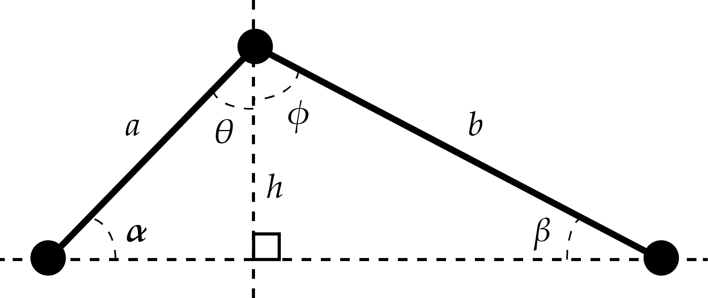
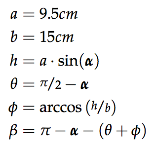

Responsible: Mathias Grelck Johnsen (s123249)
Group: Cm^3
Course: Modular Robotics (31384) in June 2015
Abstract
The drawing bot, nicknamed Stabbie is easily controlled with a joystick. The purpose was to create a remotely operated robot arm capable of sustaining its head levelled at a fixed height throughout its operating range. This makes it possible to draw with even pressure using a pencil on a flat surface.
Introduction
The task is to create an interacting robot which is judged on the basis of the following three criteria
Playfulness
Originality
Design and Implementation
Design specification
The user
Levelling the head
The head of the robotarm is levelled


Figure 1: Geometric calculations of motor angles beta and (theta + phi) based on the variable angle alpha.
Results
Stabbie performed well in all areas, even winning Design and Implementation with a score of 4.6 out of 5.
The overall assessment resulted in a score of 4.2 out of 5, resulting in a third place in the course competition.